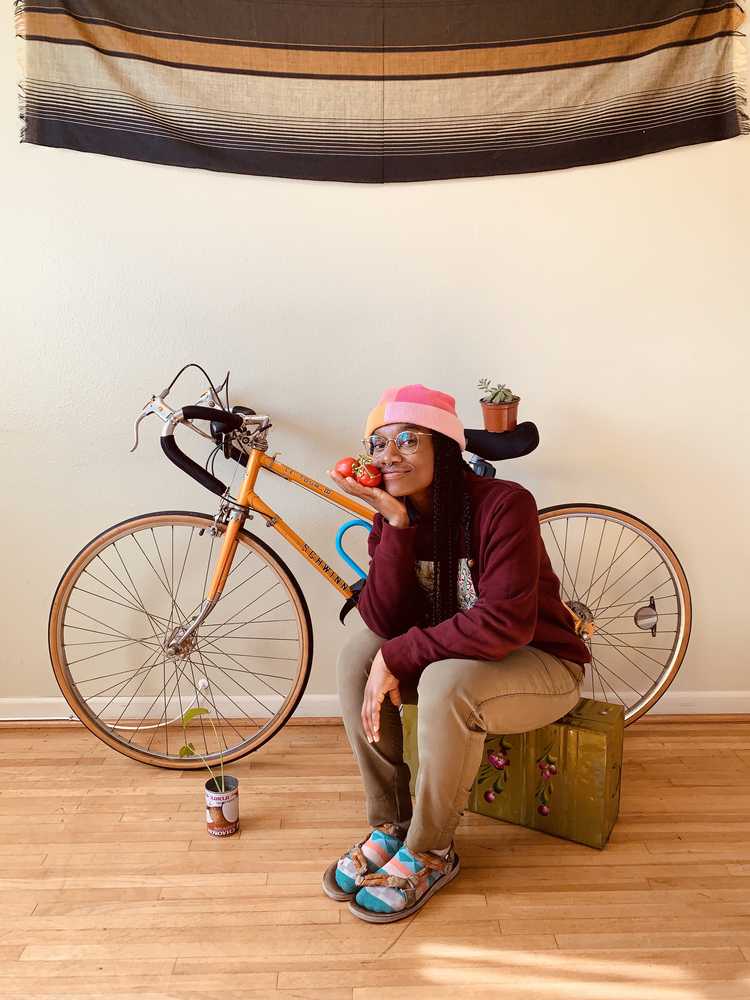

Who is Anastaysia Cole

by Anastaysia

Committed to spreading love through compassion, curiosity, creativity,
Anastaysia took CIS 192, not as requirement, but for the sake of
learning. Never did she know she'd take a course with Professor
Hamachi, a human in time-space who confirmed, that she is meant to
teach. I pressed through while working 9-5 and you gave be the
encouragement to keep learning after this course.
Rate/Review | Review Page
Recipe to Life
-
3/4 cup of willingness to change.(Actually, toss the entire bag)
- 1 bowl of tajin with fruit
- 1 cup of tears
- 5 cups of compassion
- 1 amazing girlfriend
- A sprinkle of amazing friends
- A ton of willingness to evolve.
- 3 teaspoons of communication
- A bouquet of hand-picked flowers
- Water
- 1/4 cup sliced almonds in the cabinet for girlfriend
Cuando El Amor Te Toca
7:15am 12.11.20
Maybe it's the SFV, the beets, apple, pineapple, lemon, carrot, and God
knows what else combination, that has me feeling this way. Maybe it's
the fact that even though I saw you Tuesday, I simply miss you. I
achingly miss you. I want to hold you in this moment. Beautiful cream
skin so soft, I dream of the moment I get to wake up next to you. I know
that we will meet again yet I want you to stay with me...